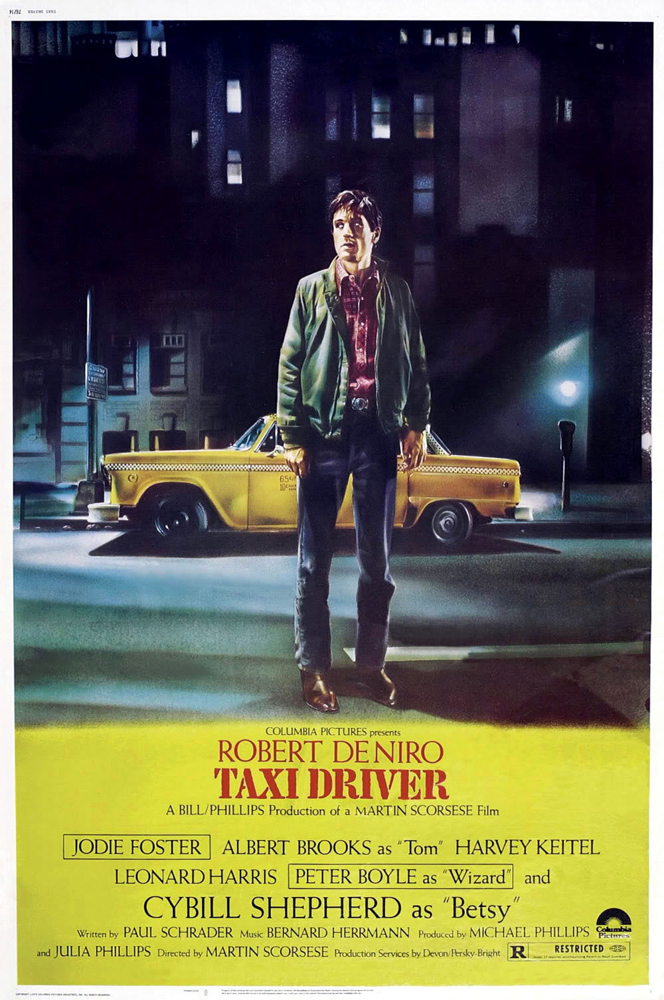
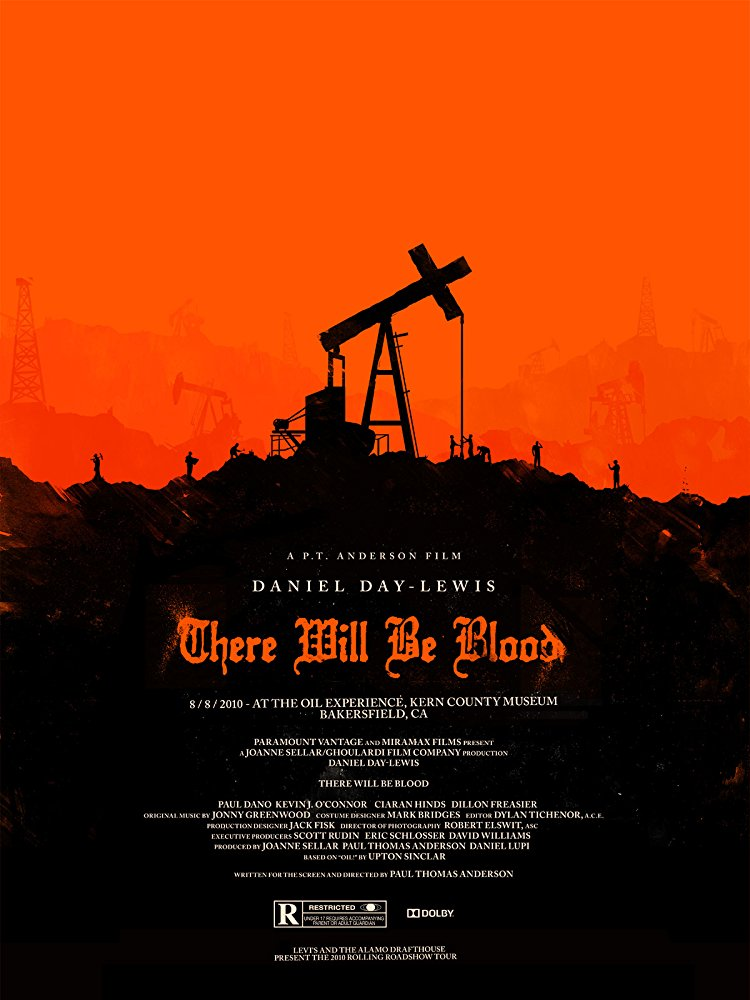

Manuel Farez
Programmer at Le Wagon
Studied political science and communicationsat SciencesPo Paris. Studied film directionat Fundacion Universidad del Cine in Buenos Aires, Argentina. Workedat J Walter Thompson, Wild Bunch and Doctolib. Decided to join Le Wagon to strengthen technical skills and be able to work more with product teams in the future.
Favorite movies

|
Paris TexasTravis Henderson, an aimless drifter who has been missing for four years, wanders out of the desert and must reconnect with society, himself, his life, and his family. |
|  |
Taxi DriverA mentally unstable Vietnam War veteran works as a nighttime taxi driver in New York City, where the perceived decadence and sleaze feeds his urge for violent action, while attempting to save a twelve-year-old prostitute in the process. |
|  |
There Will Be BloodA story of family, religion, hatred, oil and madness, focusing on a turn-of-the-century prospector in the early days of the business. |